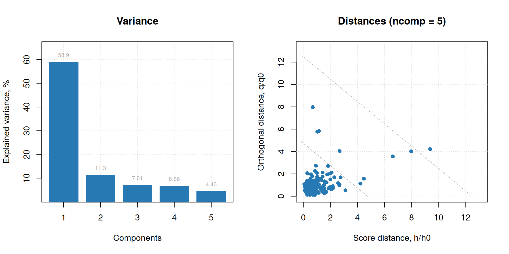
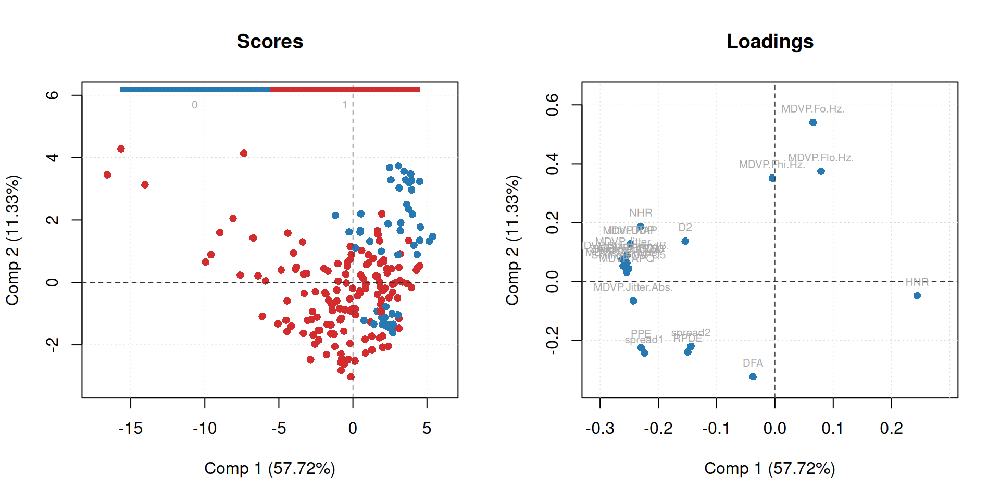

# import libraries
library(tidyverse)
library(mdatools)
# import dataset
park_data <- as.data.frame(read.csv('data/parkinsons.data'))
# extract the independent variable "status" and
# remove it from the dataset of dependent variables
patient_status <- park_data[, c('name','status')]
park_data$status <- NULL
# set patient ID as rowname
rownames(park_data) <- park_data$name
park_data$name <- NULL
# check for NAs
rows_with_NAs <- park_data[!complete.cases(park_data), ]
print(rows_with_NAs)PCR on vocal measurements of parkinson patients
1 Dataset description
The dataset utilized in this project is the Parkinson’s Disease Data Set, originally created by Max Little at the University of Oxford in collaboration with the National Centre for Voice and Speech (Denver, Colorado). It is designed to distinguish healthy individuals from those with Parkinson’s Disease (PD) using non-invasive voice measurements. The dataset contains a total of 195 instances, representing sustained vowel phonations (saying “ahhh”) from 31 individuals. Of these individuals, 23 have been diagnosed with Parkinson’s disease, and 8 are healthy control subjects. Because there are multiple recordings per patient, the dataset includes a name column identifying the specific patient and recording number. Each instance is described by 24 attributes, which include a primary identifier, a diagnosis column and 22 voice measurement features. The voice measurement metrics contain various acoustic properties, such as fundamental frequency, frequency variation (jitter), amplitude variation (shimmer) and tonal noise.
2 Goal of the analysis
The primary objective of this analysis is to explore the dataset using Principal Component Analysis (PCA) to identify patterns and relationships between the acoustic features and the diagnosis status of the patients. By reducing the dimensionality of the data, we aim to uncover underlying structures that may differentiate healthy individuals from those with Parkinson’s disease. Additionally, we will use a General Linear Model (GLM) to assess the predictive power of the principal components in classifying patients based on their diagnosis status. Ultimately, this analysis seeks to provide insights into which acoustic features are most relevant for distinguishing between healthy individuals and those with Parkinson’s disease, and to evaluate the effectiveness of these features in a predictive modeling context.
3 Principle component analysis
3.1 Data setup
Nachdem dem Import der Daten wurde die abhängige Variable “status” extrahiert und aus dem Datensatz der unabhängigen Variablen entfernt. Anschließend wurde die Patienten-ID als Zeilenname festgelegt, um die Daten besser zu organisieren. Schließlich wurde der Datensatz noch negativ auf fehlende Werte überprüft.
3.2 First run (outlier identification)
# run PCA with 5 principal components
pca.park <- mdatools::pca(park_data, ncomp = 5, scale = TRUE, center=TRUE)
par(mfrow = c(1, 2))
# plot variance
plotVariance(pca.park$res$cal, type = "h", show.labels = TRUE, labels = "values")
# plot residuals
plotResiduals(pca.park, show.labels = FALSE)
# remove outliers
outlier_list <- c("phon_R01_S35_6")
park_final <- park_data[!(rownames(park_data) %in% outlier_list), ]
patient_status <- patient_status %>%
filter(!name %in% outlier_list)In the first run of the PCA, we identified an outlier with a high orthogonal distance in the dataset, which was the recording “phon_R01_S35_6”. To ensure the robustness of our analysis, the outlier was removed from the dataset.
3.3 Second run (PCA with 5 components)
# run PCA after outlier-removal
pca.park_final <- mdatools::pca(park_final, ncomp = 5, scale = TRUE, center=TRUE)
par(mfrow = c(1, 2))
# plot variance
plotVariance(pca.park_final$res$cal, type = "h", show.labels = TRUE, labels = "values")
summary(pca.park_final)# plot residuals
plotResiduals(pca.park_final, show.labels = FALSE)# plot PC1 vs PC2
par(mfrow = c(1, 2))
plotScores(pca.park_final, c(1, 2), show.labels = FALSE, cgroup = patient_status[,'status'])
plotLoadings(pca.park_final, c(1, 2), show.labels = TRUE)
After removing the identified outlier, we reran the PCA with 5 principal components. The variance plot indicates that the first few principal components capture a significant portion of the variance in the data. The residuals plot shows that there are no critical remaining outliers.
Altough the scores plot of PC1 vs PC2 does not show a clear separation between healthy and Parkinson’s patients, the first component seems to capture some tendencies in the data between the two groups. When looking at the loadings plot, we can see that healthy patients tend to have higher values in vocal fundamental frequency and the tonal measure NHR, while Parkinson’s patients show higher values in measures of amplitude variation (shimmer) and frequency variation (jitter). This suggests that the first principal component may be influenced by these acoustic features, which could be relevant for distinguishing between healthy individuals and those with Parkinson’s disease.
4 General Linear Model
To further analyze the relationship between the principal components and the diagnosis status, we performed a general linear model (GLM) analysis. The GLM was fitted with the patients parkinsons status as the dependent variable and the first two principal components as independent variables. The model summary provides insights into the significance of each component in predicting the diagnosis status, which can help us understand how well these components differentiate between healthy individuals and those with Parkinson’s disease.
#extract PCA scores
pca.park_scores <- as.data.frame(pca.park_final$res$cal$scores)
# extract the first 2 principle components for the GLM
glm_data <- pca.park_scores %>%
select("Comp 1","Comp 2")
# add dependent variable "status" to the df
glm_data$status <- patient_status$status
# create GLM model
glm_park <- glm(status ~ `Comp 1` + `Comp 2`, data = glm_data, family = binomial)
# model summary
summary(glm_park)The GLM analysis revealed that both the first and second principal components are significant predictors of the diagnosis status, with p-values beeing massively below the 0.05 threshold. This indicates that the acoustic features captured by these components are relevant for distinguishing between healthy individuals and those with Parkinson’s disease. The coefficients of the model suggest that higher values in the two components lower the odds of a patient beeing diagnosed with Parkinson’s disease, which is consistent with the observations from the loadings plot where healthy patients tend to have higher values in certain acoustic features. Overall, the GLM analysis supports the findings from the PCA and provides a statistical basis for the observed differences between the two groups.
Finally I accessed how well the model can predict the diagnosis status by calculating the predicted probabilities and classifying patients based on a threshold of 0.5. The confusion matrix showed 160 correct and 34 false predictions (10 FN and 24 FP) resulting in a accuracy of approximately 82.5% and indicating that the model performs reasonably well in distinguishing between healthy individuals and those with Parkinson’s disease, although there is still room for improvement.
5 Conclusion
In conclusion, the PCA analysis revealed that certain acoustic features captured by the first two principal components are relevant for distinguishing between healthy individuals and those with Parkinson’s disease. The GLM analysis further supported these findings by showing that both components are significant predictors of the diagnosis status. The model’s performance, with an accuracy of approximately 82.5%, indicates that while it is reasonably effective in classifying patients, there is still potential for improvement, possibly by incorporating additional features or using more complex modeling techniques.